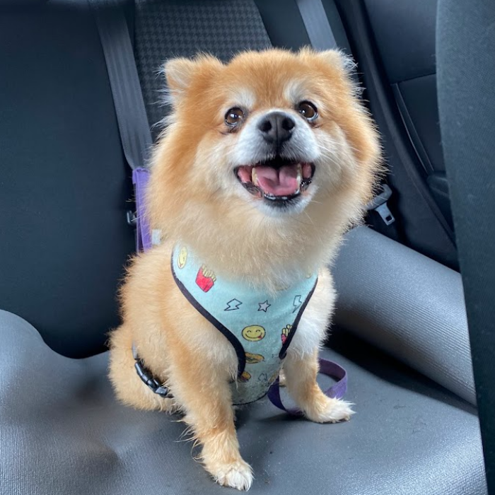
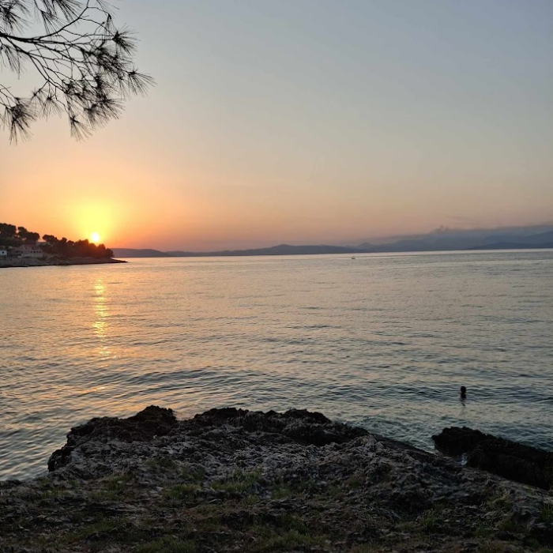

About Me
Hello and welcome to Laura’s Lounge, allow me to introduce myself. My name is Laura and I live on a remote Croatian island with my pet dog Valentino. I spend my time doing what many people in this situation would do - uni work, swimming and gaming. Otherwise, I like to learn new and fun skills. I am currently learning 2 programming languages (Java and Python), a third language (Italian) and how to play the piano, which are all challenging in their own sense. Feel free to have a look around my webpage.
My Dog
This is Valentino, my moral support agent and best friend. He likes to go for loooong walks on the beach, ending the day with a nap. His favourite words are "očemo ić šetat?", (want to go for a walk?), which results in lots of happy barks!
Where I'm from
This is the island of Šolta that I live on. As you can see, it is absolutely beautiful. The nature here is truly mesmerising! I was also fortunate enough to spend my childhood on this mesmerising island with my family each year growing up.
